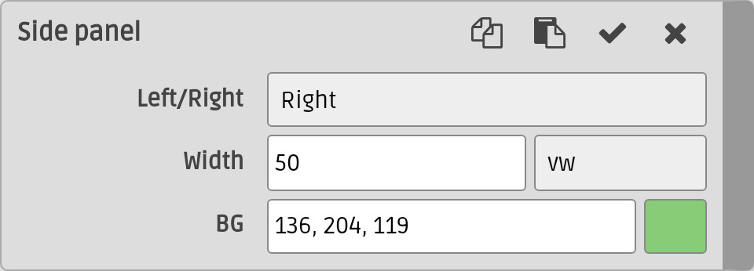

Widgets
The insert widgets menu (
) contains actions to create some useful widgets.
Accordion
Create an accordion widget. An accordion show a list of items one at a time. An example is the FAQ page of the manual.
Annotation
Create a hidden annotation over the current
selection. A click on the annotated region would show the annotation. Click anywhere outside the annotation hides it. Configure the border and background color in the Pick Style dialog and then select one of the builtin styles: Basic or List. Here is an
example
.
An popup annotation example.
- You can put any HTML in the annotation, like lists, , links, , ... or even nestedannotations.XXX
Annotation (Image)

Annotation (Photo)
Flexbox
Wrap a selection of elements with a flexbox and
put each element in its own cell. The gutter input specify the spacing between the cells. If it is left empty, no gutter is created. If the current selection is a collapsed selection, it shows the Pick Style dialog and create a two cells flexbox, here is an

example
.
Right box
Glass


{kind=link}
{kind=link}
{kind=link}
{kind=link}
{kind=link}
{kind=link}
{kind=link}
{kind=link}
Picture Frame
{kind=link}
Create a frame around the current selection. Other than the standard decorations, like
padding, border, margin ... etc, there are options to rotate the frame,
make it scrollable and position it in a number of ways. The positioning options are:
-
Static (position:static) - The frame flow like a standard DIV element.
-
Float Left (float:left) - Float the frame to the left. This enable the clear field that control how the other content flows around it.
-
Float Right (float:right) - Float the frame to the right. This enable the clear field that control how the other content flows around it.
-
The rotate option often require hard coding the size information and may not align or size properly when the layout changes. It would works better if you use absolute size units, like px.
Sidebar
Create a new tab at the right sidebar. Unlike the
left sidebar, the right sidebar is part of the document. The right sidebar and the tabs are
fixed at the right side of the viewport and thus always available. The sidebar of this page is
a good example. The User Guide tab, on click, jumps to
the front page of this guide. The
tab opens the right side panel. Another application is the editing action buttons from the templates which provide custom per document editing actions.
{kind=link}
tab opens the right side panel. Another application is the editing action buttons from the templates which provide custom per document editing actions.
Side Panel
Create a hidden side panel on the left/right which, like
the right sidebar, is part of the document. A button is created on the sidebar to show the side
panel. For example, this page has a side panel that shows the table of content of the User
Guide.
{kind=link}
Slideshow
Create a slideshow of a list of selected IMG
elements. A click on the window start/stop the slideshow. See a demo here.
{kind=link}
Sticker
{kind=link}
{kind=link}
Create a stick on document sticker that float above the document flow from one of the builtin styles: Basic, Badge, Image and Canvas.
-
Stick on Screen (position:fixed) - The frame stay at a fixed position relative to the viewport. Other content flows under it.
-
Stick on Document (position:absolute) - The frame stay at a fixed position relative to the containing element. Other content flows under it.
See samples here.
-
You can move the sticker around using the Move action ( ) in the Paragraph submenu of the Main Contextmenu.